図（figure）と地（ground）
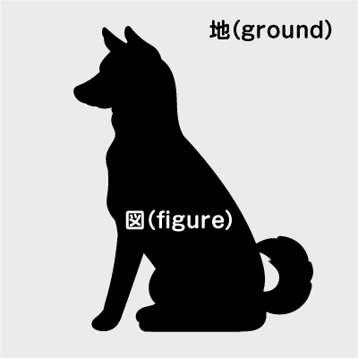
- 実在するものを表現するとき、実際に形あるものや空間を、平面にどのように表現したらよいかという問題にぶつかります
- 犬の例は、犬の形態を黒い形で表わし、まわりの空間をグレーの形で表わしたものです
- 黒い犬（シルエット）の部分がポジティヴな形、まわりのグレーの部分がネガティブな形です
- 情報を単純化した状態です
情報の単純化
- 図（figure）と地（ground）を単純化することにより、空間を捉えることに役立ちます
新規ファイル作成
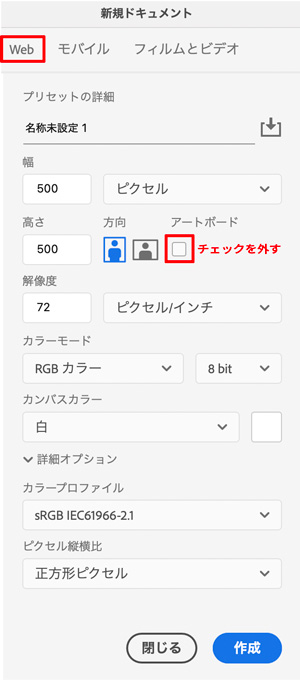
Photoshopで選択範囲
- 目的のターゲットを決める（図（figure）or 地（ground））
長方形選択ツール
- 「楕円形選択ツール」も同様の使い方です
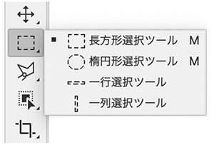
- ツールを選択すると見えるポインターでドラッグする
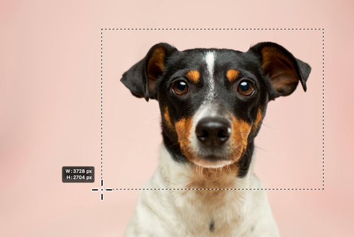
- この選択している点線の囲み（選択範囲）を「マーキー」と呼びます
選択範囲の追加と削除
- ［Shift］キーを押しながらドラッグで、選択範囲を追加
- ［Alt（option）］キーを押しながらドラッグで、選択範囲を削除
選択範囲を解除
- ［Ctrl（command）］キー ＋[D]キー
オブジェクト選択ツール
- 最も利用頻度の高いツールです

ドラッグして選択範囲を決める
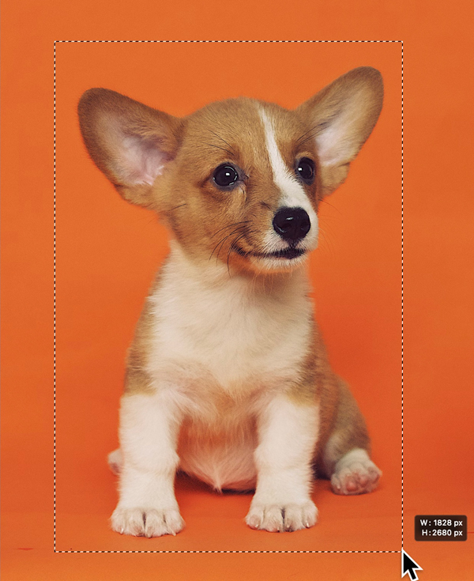
オプションバーの「被写体を選択」ボタンを押す
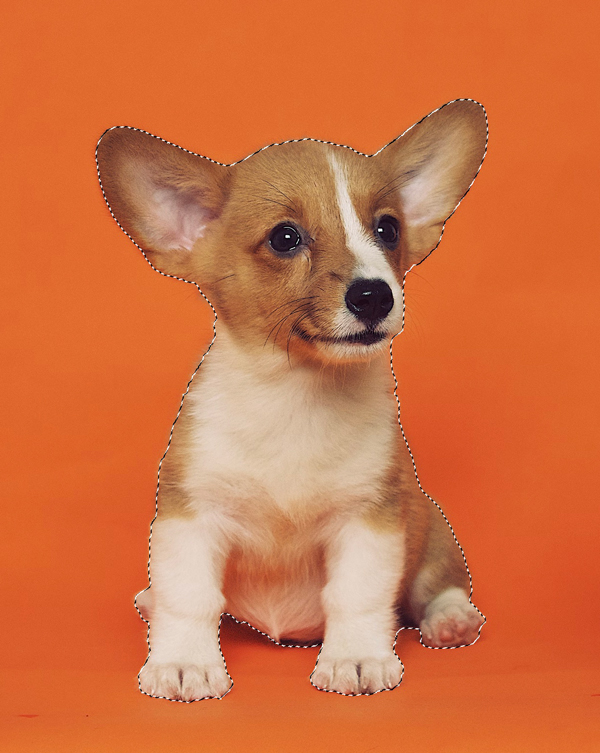
ホバー選択
- このような近い色相の画像の一部を選択するときに有効
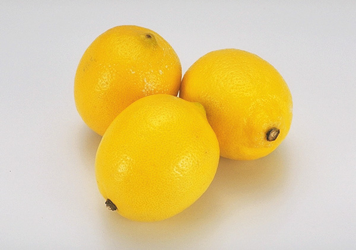
- オブジェクト選択ツールのオプションに「長方形ツール」と「なげなわツール」があるので、どちらかを選択
- 選択したい画像の一部の上にマウスをホバーする
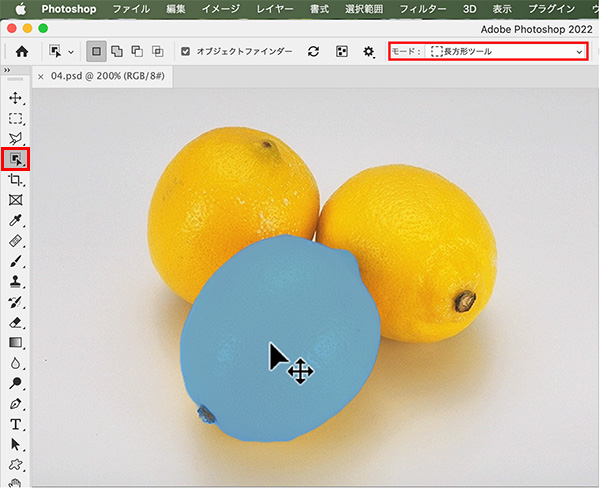
- 青い面ができたら、そこをクリックします
- しばらくすると「選択範囲」の表示になります
- ただし、選択範囲の精度はあまいので、常に有効に使えるわけではありません
自動選択ツール
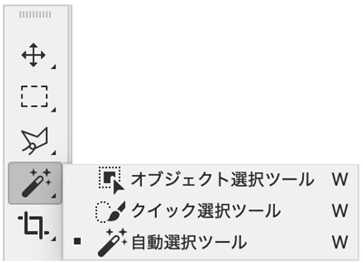
- オプションバーの「許容値」の値で隣接する近似色を選択します
- 「オブジェクト選択ツール」で、選択がしやすくなったことで使用頻度は少なくなっています
- 以下の例のように「背景」が一色の場合に利用します
背景をクリック
- 近似色を選択する
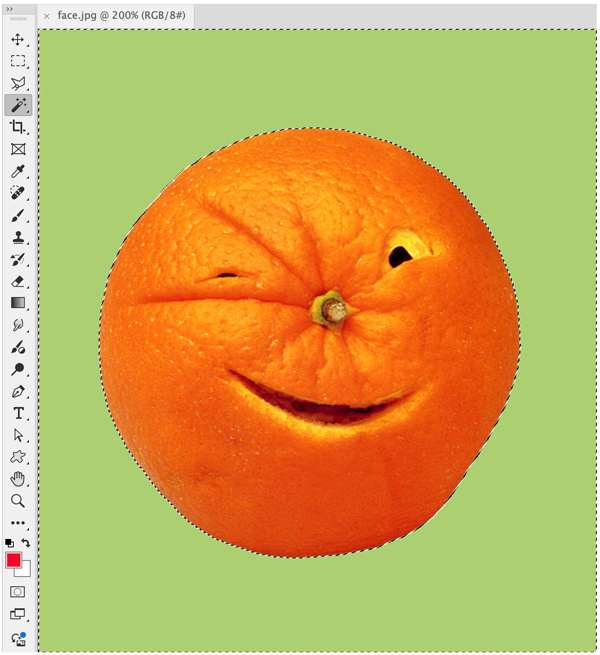
選択範囲を反転
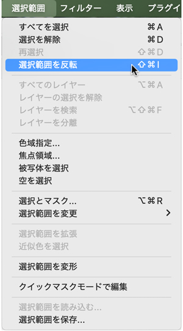
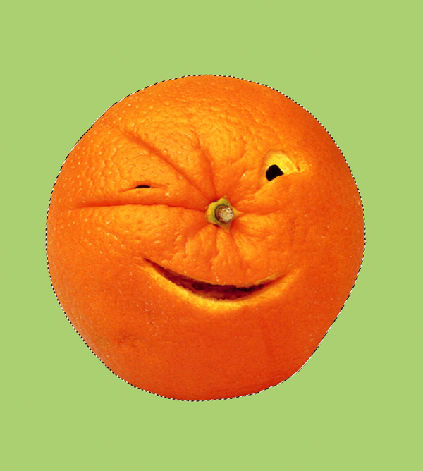